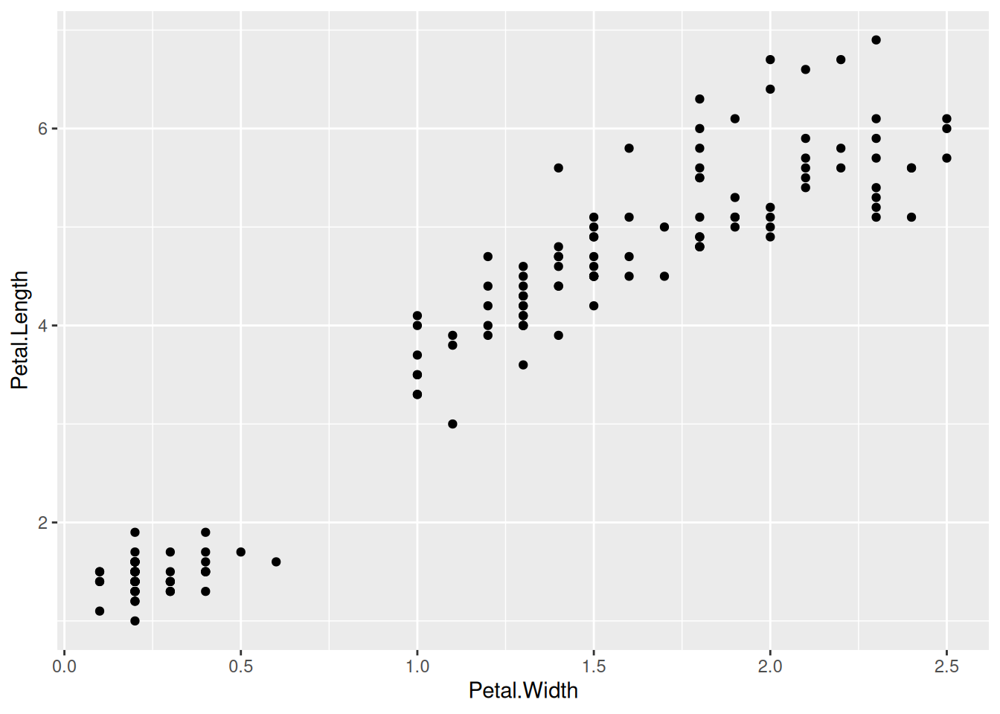
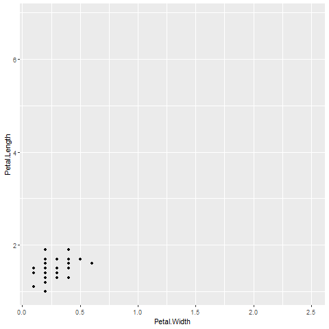

1.1 Software installation
1.1.1 Download R
Download the latest version of R. You can do this in a couple of ways.
- Download the latest version of R from https://cran.r-project.org/. This will not copy over your old packages. So you might want to try one of the next two approaches instead.
- Windows only: use the
installrpackage by running these lines of code. This will help you copy old packages over to your new version of R if you have a Windows machine.
install.packages("installr")
library(installr)
updateR()It will say that “It is best to run this from the Rgui and not from RStudio. Would you like to abort the installation and run it again from Rgui?” I say yes. Then I go to C:\Program Files\R\R-x.x.x\bin\x64 (my latest version of R) and double click on Rgui.exe. Then I run the code again.
After it installs, it will ask if you want to copy your packages from your old version of R. I say yes. Then it asks if you want to keep the packages in your old version of R. I say yes again. I say yes to the question about Rprofile and yes to the question about updating packages.
The copying of packages to the old version of R to the new version sometimes doesn’t work. If that happens, you can running this function.
installr::copy.packages.between.libraries()If these give warnings, you may need to right click Rgui.exe and select Run As Administrator. That fixed the warnings for me.
If that doesn’t work, you can try to copy the packages manually by going to the library folder of your old version of R (e.g. C:\Program Files\R\R-4.3.1\library) and copying the folders of the packages you want to the library folder of your new version of R (e.g. C:\Program Files\R\R-4.3.3\library). Newly installed packages might be instead by in a user-specific folder (e.g. C:\Users\USERNAME\AppData\Local\R\win-library\4.3) by default. In that case, those should be copied into the new folder.
The updating of packages sometimes doesn’t work either. You can use update.packages() to update all packages, or update.packages(ask = FALSE) to update all packages without asking for permission.
- Mac only: use
updateRpackage by running these lines of code. This will help you copy old packages over to your new version of R if you have a Mac.
install.packages("devtools")
devtools::install_github("AndreaCirilloAC/updateR")
library(updateR)
update()After installing the newest version of R, restart R Studio. R Studio should automatically detect the new version of R, especially if you update R Studio as well (see below). If it doesn’t automatically detect the new version of R, you can go to Tools, Global Options, General, and change the version of R that R Studio uses to the one you just installed.
This code will show your version of R when you knit the document. It should say R version 4.4.2 (2024-10-31).
[1] "R version 4.4.2 (2024-10-31)"1.1.2 Download R Studio
Download the latest version of R Studio. Go to Help, Check for Updates. Or, go to https://posit.co/download/rstudio-desktop/. Note that you will see “Posit” in a lot of places. RStudio changed their name to Posit.
This code will show your version of R when you knit the document.
Recommended Settings:
- Tools -> Global Options - General. Uncheck “Restore .RData into workspace at startup”. Make sure “Save workspace to .RData on exit” is set to “Never”. You will rarely/never want to save your workspace. If you write reproducible code, you won’t need to save your workspace. You can reproduce the same results if you restart R/RStudio. If there are any outputs in particular you would like to save (e.g. because it takes a really long time to run), you can save individual objects using
saveRDSorwrite.csv, or groups of objects withsave. You can write these in your reproducible code. If for some reason you need to save the entire workspace, you can usesave.image. However, I have literally never done this. - If you prefer dark mode, Tools -> Global Options -> Appearance -> Editor Theme = Tomorrow Night Bright (or some other dark theme of your choice)
- I prefer bulleted lists to be “tight” instead of “spaced”. You can change this in Tools -> Global Options -> R Markdown -> Visual -> Markdown -> Default spacing betwee list items = Tight.
1.1.3 Install/update packages
Here are packages we’ll definitely use. Install these now. We will likely use others as well but we’ll have to install those on the fly as we need them.
I recommend closing all R Studio windows except one, and restart R. Then install all packages listed here.
install.packages("tidyverse")
install.packages("knitr")
install.packages("plotly")
install.packages("scales")
install.packages("DT")
install.packages("leaflet")
install.packages('terra')
install.packages("gganimate")
install.packages('gifski')
install.packages('png')
install.packages("corrplot")
install.packages("GGally")
install.packages("ggmap")
install.packages("shiny")
install.packages("MASS", exclude = 'select')
install.packages("lme4")
install.packages("arm")
install.packages("pROC")
install.packages("MLmetrics")
install.packages("viridis")
install.packages("RSelenium")
install.packages("rvest")
install.packages("randomForest")
install.packages("FNN")
install.packages("caret")
install.packages("pls")
install.packages("devtools")
install.packages("splines")
install.packages("RecordLinkage")
install.packages("ff")
install.packages("rsconnect")
install.packages('grid')
install.packages('foreign')
install.packages('maps')
install.packages('timeDate')
install.packages('tidycensus')
install.packages('pscl')
install.packages('arrow')
install.packages('pdftools')
install.packages('bookdown')
## Install packages from my GitHub
devtools::install_github("bmacGTPM/pubtheme")If you get errors you don’t understand, try installing them one by one.
If you get any sort of “permission denied” errors when trying to install the packages, you can try going to the folder with the library (e.g. C:\Program Files\R\R-4.2.2\library), delete the folder, and then install the packages again. For me, this happens often with rlang and htmltools.
If it seems to freeze at the statement “There are binary versions available but the source versions are later:” check for a small window that opened but hidden behind other windows, with the question “Do you want to install from sources the packages that needs compilation?” Say yes. If you get an error with any of these, you can try saying no.
Check that you can load all of the libraries by running this chunk of code and showing that it executes without error. There may be some messages, and maybe warnings about versions. Those are ok.
Code
library(knitr)
library(scales)
library(DT)
library(leaflet)
library(terra)
library(gganimate)
library(gifski)
library(png)
library(corrplot)
library(GGally)
library(ggmap)
library(shiny)
library(MASS, exclude = 'select')
library(lme4)
library(arm)
library(pROC)
library(MLmetrics)
library(viridis)
library(RSelenium)
library(rvest)
library(randomForest, exclude = 'margin')
library(FNN)
library(caret)
library(pls)
library(devtools)
library(splines)
library(RecordLinkage)
library(ff)
library(rsconnect)
library(grid)
library(foreign)
library(timeDate)
library(tidycensus)
library(pscl)
library(arrow)
library(pdftools)
library(bookdown)
## load tidyverse last!
library(tidyverse)
library(plotly)
library(pubtheme)
## Note to self: load this library explicitly. For some reason GitHub Actions had a problem when this wasn't explicitly loaded here.
library(maps) 1.1.4 Check gganimate
Let’s create a really quick animation that appears in the gganimate introduction. First a static (non-animated) plot.
Code

That should give a static plot. The following code should give an animation.
a = g +
transition_states(Species,
transition_length = 2,
state_length = 1)
aThat should ideally show an animation in the Viewer in R Studio. The default location of the view is a tabs in the lower right window.
If it looks like R starts saving several image files to your computer, make sure that the package gifski is installed and that library(gifski) doesn’t give any errors.
This should save the animation a as an animated .gif file.
anim_save(a,
filename = 'img/test.gif')It should be in the same folder as this R Markdown file. If that works, gganimate is good to go!

1.1.5 Check lmer
Let’s check that lmer is working properly. This model doesn’t make a ton of sense, but we just want to check the function.
Code
Linear mixed model fit by REML ['lmerMod']
Formula: Petal.Length ~ Sepal.Length + (1 | Species)
Data: iris
REML criterion at convergence: 69.3
Scaled residuals:
Min 1Q Median 3Q Max
-2.71305 -0.62672 0.02935 0.61922 2.83011
Random effects:
Groups Name Variance Std.Dev.
Species (Intercept) 2.52912 1.5903
Residual 0.07984 0.2826
Number of obs: 150, groups: Species, 3
Fixed effects:
Estimate Std. Error t value
(Intercept) 0.05252 0.95576 0.055
Sepal.Length 0.63414 0.04525 14.014
Correlation of Fixed Effects:
(Intr)
Sepal.Lngth -0.277
$Species
(Intercept)
setosa -1.7639020
versicolor 0.4429569
virginica 1.3209451
with conditional variances for "Species" Check glmer.
Code
Generalized linear mixed model fit by maximum likelihood (Laplace
Approximation) [glmerMod]
Family: binomial ( logit )
Formula: setosa ~ Sepal.Length + Petal.Length + (1 | var1)
Data: dm
AIC BIC logLik deviance df.resid
8 20 0 0 146
Scaled residuals:
Min 1Q Median 3Q Max
-1.49e-08 -1.49e-08 -1.49e-08 1.49e-08 1.49e-08
Random effects:
Groups Name Variance Std.Dev.
var1 (Intercept) 0.002283 0.04778
Number of obs: 150, groups: var1, 3
Fixed effects:
Estimate Std. Error z value Pr(>|z|)
(Intercept) -1.312e+02 5.967e+07 0 1
Sepal.Length 6.913e+01 1.354e+07 0 1
Petal.Length -8.671e+01 6.356e+06 0 1
Correlation of Fixed Effects:
(Intr) Spl.Ln
Sepal.Lngth -0.976
Petal.Lngth 0.756 -0.872
optimizer (Nelder_Mead) convergence code: 0 (OK)
unable to evaluate scaled gradient
Hessian is numerically singular: parameters are not uniquely determined
$var1
(Intercept)
A -7.096650e-18
B -9.124264e-18
C -9.003000e-18
with conditional variances for "var1" 1.1.6 Github
- Create a GitHub account at https://github.com/ if you don’t have one.
- Download GitHub Desktop at https://desktop.github.com/.